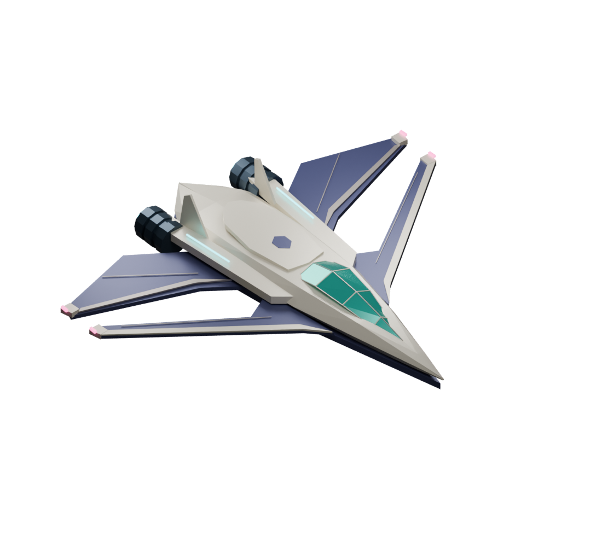

Every distant light is a destination.Find your own way through the universe.
AURORA will find a safe landing site.
TEMPERATE OCEAN
Fly freely, or let the navigation assistant take you from orbit to your first footprint.
Exit down the illuminated rear ramp. Walk back to it and press E to reboard. Oceans have real depth; movement slows in water.
Every star on screen belongs to the procedural star field. Select it with the crosshair or chart, then use the pulse drive. Landing assist picks a dry, level site and flies the complete approach.

Your story is still unwritten. Approach a planet and press R to survey it, or touch down to record your first discovery.
AURORA could not initialize graphics.